PlotDevice provides a set of commands for drawing basic geometric shapes, text, and images. All of these drawing primitives take a pair of x/y coordinates to set the position. But based on the command-type this will be interpreted as either the top-left corner location or the "origin" point. You'll find yourself using both kinds of positioning depending on what you're trying to accomplish.
| 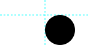 | oval(x, y, width, height, …)oval(75,25, 50,50) |
| 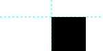 | rect(x, y, width, height, …)rect(75,25, 50,50) |
| 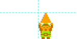 | image(file, x, y, …)image("~/Pictures/triforce.png", 75,25)
|
Origin-based | |
| 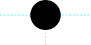 | arc(x, y, radius, …)arc(75,25, 25) |
| 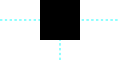 | poly(x, y, radius, …)poly(75,25, 25)
|
| 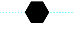 | poly(x, y, radius, sides=, …)poly(75,25, 25, sides=6) |
| 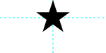 | poly(x, y, radius, points=, …)(75,25, 25, points=5) |
| 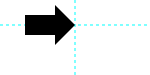 | arrow(x, y, width, …)arrow(75,25, 50) |
| 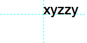 | text(str, x, y, …)text("xyzzy", 75,25)
|
In the Reference, each drawing primitive and its usage is discussed thoroughly. The reference is something you’ll want to keep close by when you start learning PlotDevice. After a bit of experimenting you’ll know all the primitives by heart.
For example, take a look at documentation for the rect() command. As you might expect, this command draws a rectangle. At the top of the reference entry is a description of its syntax. The list of required and optional arguments provides the details you need to invoke the command in a way that PlotDevice understands.
In case of the rect() command the syntax is:
rect(x, y, width, height, roundness=0.0, plot=True)
All commands in PlotDevice look like this: you have the name of the command (rect for example) which gives you a hint of what the command will do, and some stuff between parentheses. The stuff between "parens" will be referred to as parameters or arguments interchangeably.
Now rectangle could mean a lot of things. Imagine a rectangle with an equal width and height, this would be a square. We could have a square() command in PlotDevice. Imagine you would like a small rectangle at the bottom of the canvas ... we could have a smallbottomrect() command ... we could define an infinite number of commands for rectangles in all sizes and flavors!
Instead of defining a tangle of commands, there is a single rect() command with parameters. Parameters are values you can customize to change the command's behavior. You can supply numbers, variables, strings, or even objects as parameters depending on what the command knows how to handle.
For example, to draw a square in the top left of the canvas:
rect(0, 0, 40, 40)
Notice how we replaced the x, y, width and height from the syntax description with real numbers. These number parameters describe how our rectangle will look: it is positioned in the top left (x is 0 and y is 0) and has an equal width and height of 40. 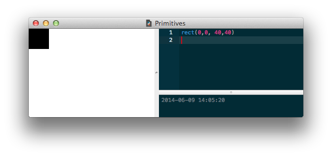
You’ll notice some other parameters in the rect() syntax which we didn’t define, the roundness=0.0 for example. If a parameter description has an =something next to it, this means it is optional. If we don’t define this parameter in our script, it’s default value is something. In case of the rectangle command, the corner roundness is 0 by default, unless we explicitly say:
rect(0, 0, 40, 40, roundness=0.5)
Now we have a rectangle with 50% round corners: 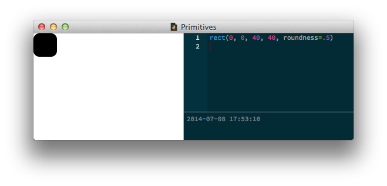
plot" parameterAll of the primitives have an optional argument called plot that defaults to True. This is a hint that just by calling the command you'll be adding a new shape to the canvas. In general this is exactly what you intended, but there are certain special cases where you'll want to store a not-yet-drawn primitive in a variable for use later on.
You can accomplish this by calling the command with an optional argument of plot=False. When you're ready to add the primitive to the canvas, call the plot() command with the reference you saved as its sole parameter:
square = rect(50,50, 100,100, plot=False) # don't draw yet ... # do other things plot(square) # add the square to the canvas
It’s not that difficult to create your own commands in PlotDevice. In the Commands tutorial you’ll learn how to create a function that combines calls to the basic shapes to create more-complicated graphics. Also look at the tutorial on Béziers to see how you can draw freeform shapes of your choosing.